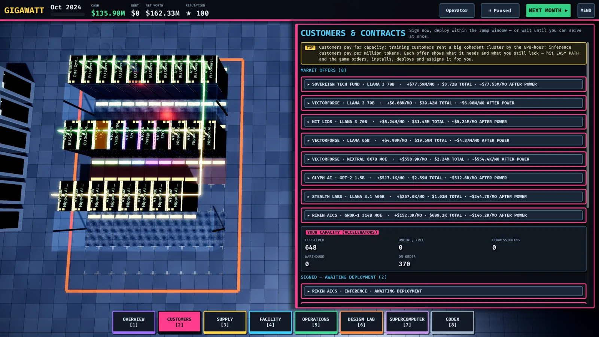
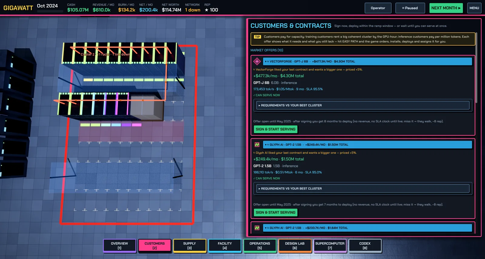

Customers and contracts
Training versus inference offers, fit verdicts, the Easy Path, SLAs, renewals and the ramp window — how capacity becomes revenue.
Customers pay for capacity in two ways, and the hardware they need differs:
- Training customers rent a big coherent cluster by the GPU-hour. Offers state a minimum accelerator count, a price per GPU-hour, and network requirements — a scale-up domain size (e.g. 72) and GB/s per GPU. Training is compute- and network-bound.
- Inference customers pay per million tokens. Offers state a target tokens/s and a price per Mtok. Inference is memory-bandwidth-bound: GPUs with more HBM capacity and bandwidth hold bigger models and bigger KV caches, serving more users per replica.
Each offer also shows its archetype (startup, lab, enterprise, sovereign), the model, the duration in months, an SLA availability target, and a deadline by which you must sign or the offer disappears.


Fit verdicts
Every offer carries a live verdict computed against your actual fleet:
- ✓ CAN SERVE NOW — an existing cluster meets every check. Sign and go live immediately.
- ◔ CAN BUILD IN TIME — you can buy and commission hardware before the ramp window closes.
- ✗ NEED MORE / DIFFERENT HARDWARE — below, the What you need to buy box names the exact racks (template, quantity, tier) that would cover the contract, when they would be ready, and whether that fits the ramp window — plus any hall gaps (power, cooling, floor) you'd need to close first. If nothing on the market can meet it, it says so: wait for a later GPU generation.
- ✗ NO CLUSTER YET — build one on the Supercomputer screen.
Checks compare need vs have: accelerators, memory, scale-up domain, scale-out bandwidth, and so on. If the verdict isn't "ready", the screen also shows your pipeline — accelerators free online, commissioning, in warehouse, on order.
The Easy Path
EASY PATH — do it all for me signs the contract, orders the racks, installs plant, deploys, builds the fabric and assigns the contract as parts arrive. Watch progress as Easy-path projects on the Overview screen (Order & build → Burn-in → Cluster → Assign → LIVE). It's a learning tool and a convenience; doing the steps yourself from the same "what you need to buy" list works identically. Just order the racks is the middle option — you buy, then handle deployment, clustering and assignment yourself.
Signing, ramp window and SLAs
You can sign an offer you can't serve yet: after signing you get a ramp window (about four months by default) to deploy. No revenue and no SLA clock runs until you go live — miss the window and the customer walks, with a reputation hit. Deploy by building or picking a cluster, or use serve straight from racks for inference without a clustering step.
While serving, the panel shows months served and SLA misses. Misses come from outages, failures and overloaded uplinks (see Incidents and resilience); too many and the contract sours. You can update which clusters serve a contract as your fleet changes, or release it back to pending.
Renewals
Delivered contracts compound: satisfied customers come back with renewal offers — bigger, at a premium over the original — and they sort to the top of the market list. Renewals are cheaper than acquisitions; a contract book balanced across training and inference rides out demand cycles instead of chasing them.
Reputation
The ★ reputation in the top bar drives the quality of offers you receive. It rises with delivered contracts and uptime, and falls with SLA misses, missed ramp windows, outages, fires and customer defaults.
Related: Networking and clusters for building what the checks demand, Money and operations for the P&L behind a signed deal.
Found a mistake or something missing? Edit this page on GitHub or ask in Discussions.